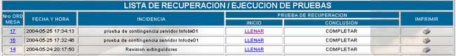
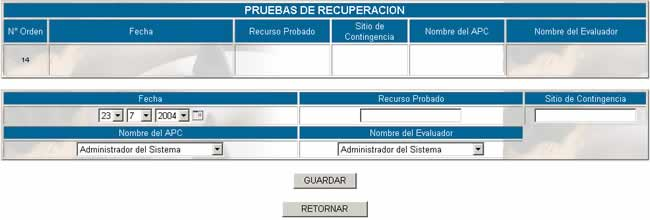
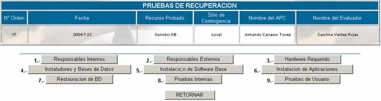

EJECUCIÓN
Solamente
se pueden evaluar las actividades planificadas. La pantalla principal de esta
opción se muestra a continuación:

Donde
Nro ord mesa; especifica el
orden de mesa enviado por el cliente
Fecha
y hora; especifica la fecha y hora en la que se realizó el envío de la orden de
mesa
Incidencia; especifica la
descripción de la incidencia a la cual se le tiene que dar solución.
Para
realizar la evaluación de pruebas haga click en el
vínculo LLENAR y aparecerá la siguiente
pantalla:

N° orden; especifica el número de orden de mesa
Fecha; especifique la
fecha de evaluación
Recurso
Probada; especifique el nombre del recurso que se probará
Sitio
de contingencia; especifique el lugar donde se llevar a acabo la
contingencia
Nombre
del APC; especifique el nombre del Administrador de plan de contingencias
Nombre
del Evaluador; especifique el nombre de la persona que realiza la evaluación del plan
de contingencia.
Presione
el botón GUARDAR para continuar con
la asignación de responsables externos e internos que se muestra en la
siguiente pantalla:

Presione cada uno de los botones para llenar los
requisitos que sea necesarios.
Haga clic en COMPLETAR para introducir
los datos complementarios.
Imprimir; genera un reporte
completa de la recuperación/ejecución de la prueba.